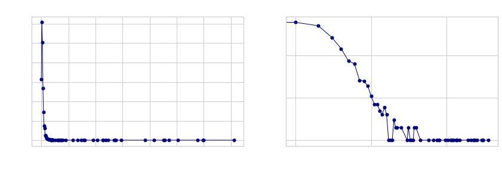

The network of Grey’s Anatomy currently consists of
- 2137
- nodes
- 9662
- edges
but the series is going strong on its 18th season (!!! ), so new characters are added to the wiki every week.
Since there are a lot of different characters in the series, we’ve divided them into 5 groups.

It’s not surprising that there are most patients, since new patients arrive in each episode whereas the hospital staff is more persistent.
Each character is described by their name, condition (alive or deceased) and role. Furthermore, the characters are connect to each other by having a doctor/patient relationship, being romantically involved and being family members. Let’s take a look at Meredith’s attributes.
- name
- Meredith Grey
- condition
- Alive
- role
- Attending
- family
- Lexie Grey, Scout Derek Shepherd Lincoln, Nancy Shepherd, Liz Shepherd, Mr. Shepherd, Ellis Shepherd, Maggie Pierce, Laura Grey-Thompson, Kathleen Shepherd, Thatcher Grey, Derek Shepherd, Susan Grey, Derek Bailey Shepherd, Winston Ndugu, Zola Grey Shepherd, Ellis Grey, Carolyn Shepherd, Amelia Shepherd
- romances
- Derek Shepherd, Finn Dandridge, William Thorpe, Nathan Riggs, Andrew DeLuca, Cormac Hayes
- doctors
- None
Now we can create a network based on the characters' relationships!
(We’ve coloured the nodes based on whether the character is alive or deceased (and edges based on relationship).)
Try our interactive plot to see who is connected! You can zoom in and out for closer looks.
We can see that some of the…
Distributions
In ultrices, est at lobortis pretium, magna quam mollis neque, id viverra odio est sit amet lorem. Mauris efficitur nunc vel lectus porttitor, sit amet sodales quam eleifend. Duis et felis ut mauris dignissim efficitur. Aliquam non sem eros. Integer elit ante, bibendum id hendrerit vitae, vestibulum eget risus. Nunc efficitur nisl in iaculis vestibulum.
The in-degree distribution can be seen below…

SOMETHING CLEVER ABOUT THE DISTRIBUTION
The out-degree distribution can be seen below…

SOMETHING CLEVER ABOUT THE DISTRIBUTION
The degree distributions show that a lot of characters have very few connections, which is often the case for patients. The characters with high degrees are mainly the doctors who are also the main characters of the series. Let’s have a closer look at these characters by exploring some statistics!
Statistics
The distribution plots showed us that there can be a huge difference in the number of connections for characters. Let’s have a look at who has the most connections.
Har gjort det på in-degree her - skal vi bare tage degree? eller både in/out?
| # |
|
Character |
Connections |
|
| 1 |
|
Meredith Grey |
356 |
| 2 |

|
Alex Karev |
300 |
| 3 |

|
Derek Shepherd |
299 |
| 4 |
|
Miranda Bailey |
289 |
| 5 |

|
Cristina Yang |
252 |
| 6 |
|
Richard Webber |
236 |
| 7 |

|
Owen Hunt |
228 |
It’s not surprising that the characters with most connections are the doctors and characters that have been in the series for a long time. However, the creators of Grey’s Anatomy are not shy of ‘killing’ the viewers' favorite doctors (RIP Derek).
What do you think the average 'lifetime' of a doctor on Grey's Anatomy is?
The 125 attendings, residents and interns have an average ‘lifetime’ of 53 episodes or approximately 2 seasons. That doesn’t sound like a lot! The violin plot below shows the number of episodes per character. As you can see there is quite a heavy bottom but also a large variation.
Hover over the plot to see who has been in most episodes!
Wauw, Miranda Bailey has been in 389 episodes! That means she is the most appearing character in the Grey’s Anatomy franchise.
PLOTS OM VIEWS AF EPISODER/SÆSONER?
OVERGANG TIL ROMANCES
PLOT / TABLE
The initial exploration of the data set made us ask …
So now we have seen that the OG characters are the ones with most connections and that their ‘lifetime’ in the series varies quite a lot. For further analysis we will take a deeper look at some of these characters development over time…